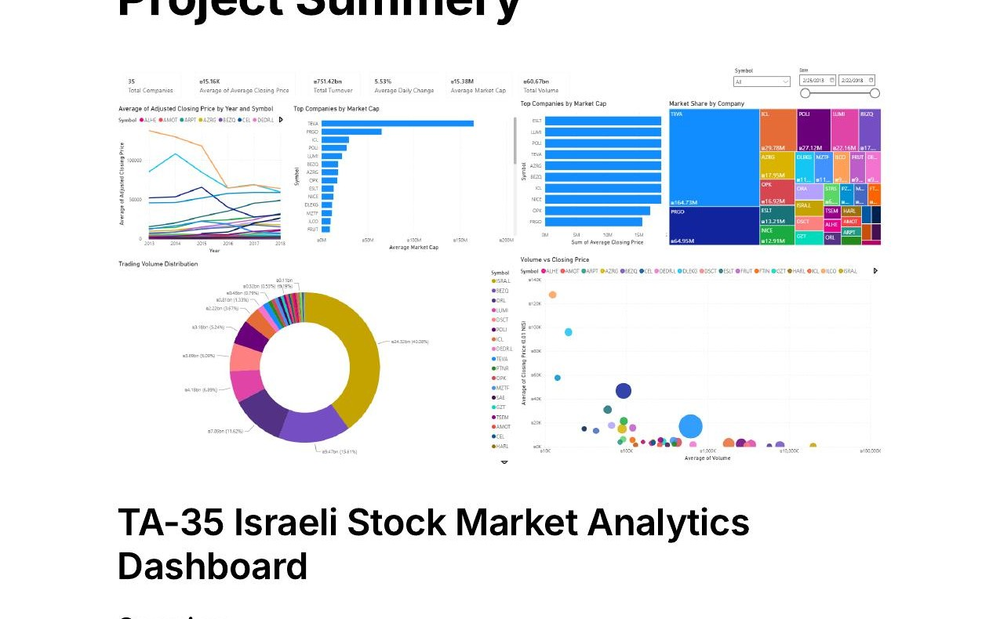
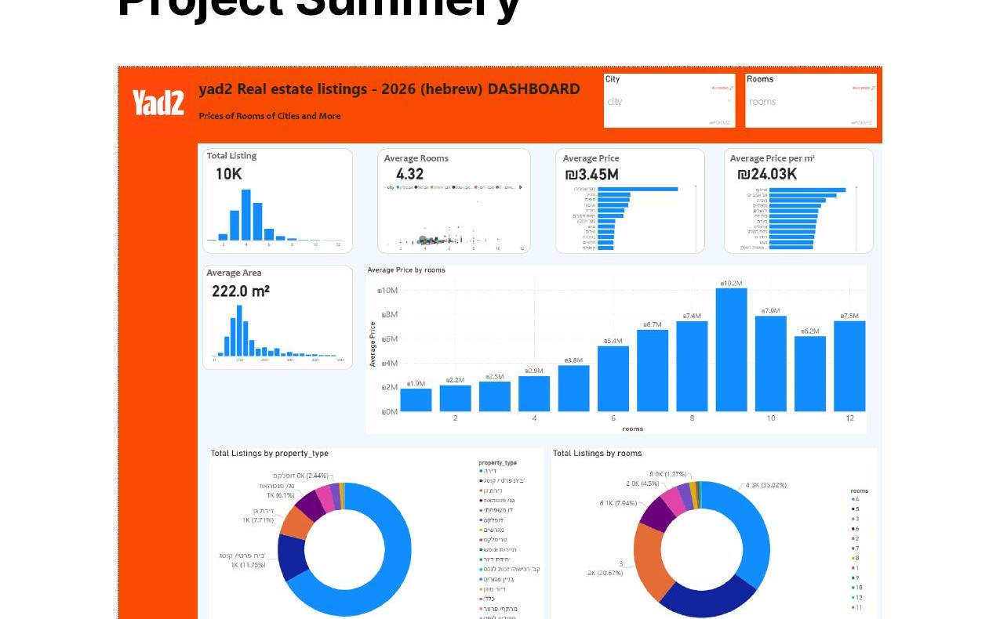
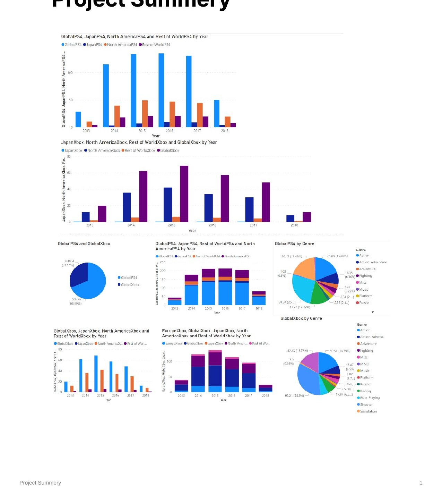
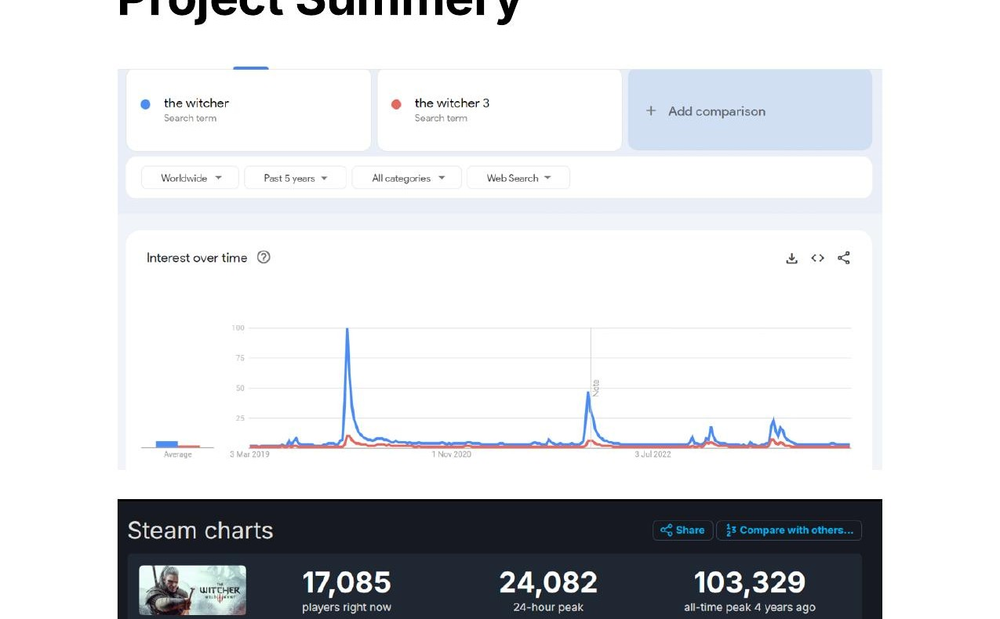
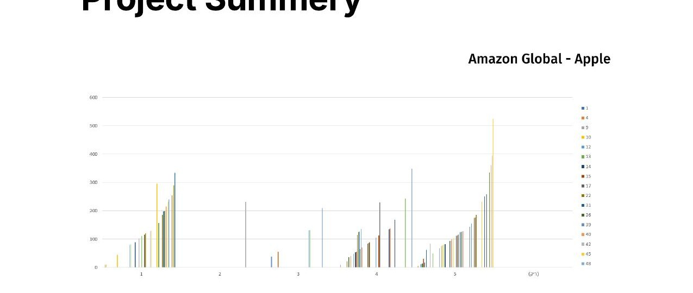

I turn raw, messy data into dashboards and reports people actually use to make decisions — built in Power BI, SQL, and Excel, grounded in real regulatory and technical systems work.
I'm a Data Analyst with a background that blends academic research, engineering, and hands-on business intelligence work. I hold an M.A. in Information Science and a B.A. in Social Sciences, both from Bar-Ilan University — training that shaped how I approach data: not just building charts, but asking what the numbers actually mean for the people using them.
Since 2018, I've worked as a Lab Engineer at the Standards Institution of Israel (SII), testing and certifying photovoltaic systems, energy storage batteries, PCS systems, and hybrid inverters against IEC, ISO, and UL standards. Day to day, that means analyzing regulatory compliance data against Israeli electricity-market and international requirements, and evaluating system performance trends to improve efficiency, reliability, and safety.
Outside of that role, I build independent BI projects — dashboards, data models, and research — spanning financial markets, real estate, and consumer behavior, several of which are detailed below.

An interactive BI dashboard analyzing five years of trading data for the 35 largest companies on the Tel Aviv Stock Exchange. Built a structured data model with calculated DAX measures to track market capitalization, trading volume, turnover, and price trends, with dynamic filtering by company and date.

A dashboard analyzing thousands of residential listings from Israel's Yad2 marketplace. Cleaned and modeled Hebrew-language listing data to surface pricing trends, city/neighborhood comparisons, and the relationship between property characteristics and asking price.

A dimensional data warehouse (fact/dimension model) built to analyze global video game sales across platforms, genres, and regions. Enriched with Metacritic critic and user scores to explore how game quality and public perception relate to commercial performance.

Research combining Google Trends, SteamDB player activity, and sales data to measure how TV adaptations of game franchises (The Witcher, Cyberpunk 2077, The Last of Us) affect search interest, player counts, and sales — testing whether success in one medium drives demand in another.

Comparative analysis of wireless earbud reviews (Apple AirPods, Samsung Galaxy Buds) across US and UK Amazon marketplaces. Combined rating distributions with qualitative review-text analysis to identify regional differences in customer expectations and satisfaction drivers.
My gaming roots go back to the golden age of JRPGs — sprawling turn-based worlds, party-based strategy, and stories that took 60+ hours to unfold. That love carried straight into the 2000s MMORPG era, spending countless hours in persistent worlds built around economies, guilds, and long-term progression systems.
That same fascination with systems, economies, and player behavior is what eventually pulled me toward data analysis — I've simply swapped grinding for XP for grinding through datasets. It shows up in the research above (media/game correlation, sales analytics), and in the video content and industry coverage below.